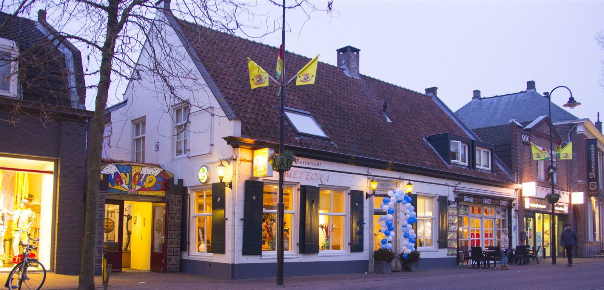
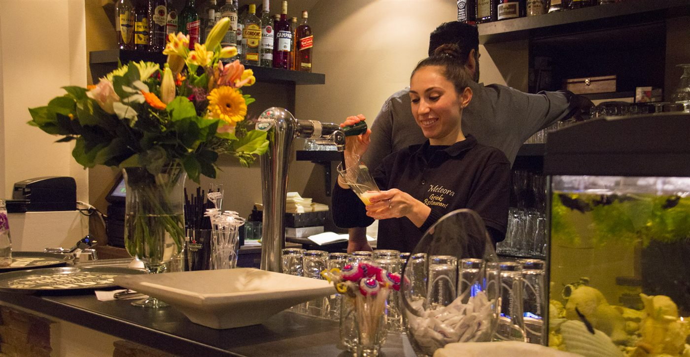
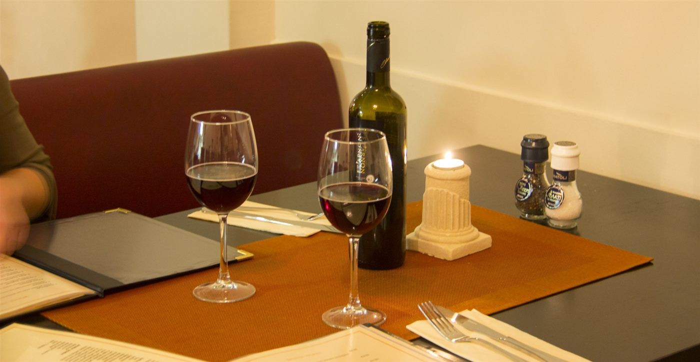
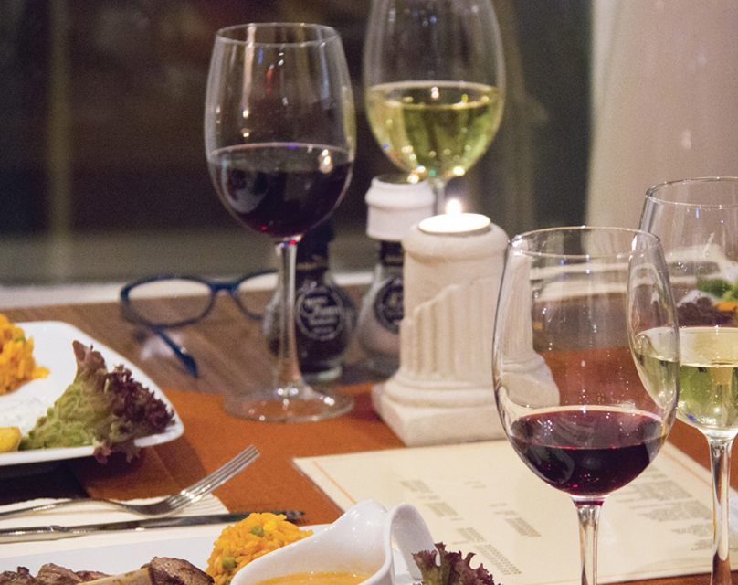

Heuvel 6, Sint-Oedenrode
Grieks tafelen aan de Heuvel, recht tegenover de Sint Martinuskerk
Griekse specialiteiten in een sfeervolle ambiance. Met ruim 25 jaar ervaring heet Antonios u welkom. Laat je verrassen!
Welkom bij Meteora
Wij heten u van harte welkom in Restaurant Meteora te Sint Oedenrode en wensen u alvast smakelijk eten. Hierbij wil ik jullie laten kennismaken met het dorpje Meteora, mijn geboorteplaats. Waar ik nu mijn restaurant naar vernoemd heb.
Bij Grieks Restaurant Meteora geniet u van Griekse specialiteiten, in een sfeervolle ambiance: van gyros en souflaki van de grill tot moussaka, stifado en vis van de grill. U vindt ons in het centrum van Sint-Oedenrode, recht tegenover de Sint Martinuskerk.
Lees over het dorp Meteora
De menukaart
De volledige kaart van 2026, met alle prijzen in euro. Heeft u een allergie of lust u iets niet? Geef het dan door aan ons personeel.
Alle hapjes worden geserveerd met brood, behalve Feta Meteora en Spanakopita. Extra brood 1,20.
- Garlic breadpitabrood, olijven, knoflook en kaas6,40
- TzatzikiGriekse yoghurt met knoflook en komkommer8,20
- Htipitipikante fetakaasmousse en pitabrood8,90
- FetaGriekse kaas (schapenkaas)8,90
- Olijven + pepertjes6,90
- Brood met kruidenboter5,50
- Extra kruidenboter2,70
- Triomixtzatziki, fetakaasmousse en pitabrood8,90
- Zalmcarpacciogerookte zalm op verse sla; alleen in het seizoen, april t/m september14,40
- Runder carpacciodungesneden rundvlees met parmezaan, truffeloliesaus en pijnboompitten12,90
- Sardientjeskleine gebakken visjes met knoflooksaus9,90
- Kalamariagebakken inktvisringen met knoflooksaus10,90
- Feta Meteoragebakken fetakaas in bladerdeeg met honing en sesamzaadjes11,20
- Scampies Saganakigarnalen in pikante Griekse saus en fetakaas uit de oven14,20
- Midia Saganakigebakken mosselen in pikante Griekse saus en kaas uit de oven13,20
- Scampies van de chefgarnalen in crème-wijnsaus13,90
- Scampies Meteoragarnalen met kruidenboter, knoflook en tijm13,40
- Keftedakiagehaktballetjes in Griekse tomatensaus10,40
- Dolmadakiagevulde wijnbladeren met rijst en gehakt10,90
- Kolokithotirokeftedescourgetteballetjes gevuld met fetakaas, met tzatziki9,90
- Champignons à la chefgebakken champignons in een heerlijk sausje10,40
- Octopusgegrild, met olijfolie, oregano en citroen17,40
- Spanakopitaspinazie met fetakaas in bladerdeeg9,90
- LoukanikoGriekse worst met pitabrood en tzatziki10,50
- PitaGrieks pitabrood met olijfolie, oregano en knoflook2,90
- Pikilia, voor 2 personenGriekse tapas: kalamaria, kolokithotirokeftedes, Griekse worst, tzatziki, garnalen, spanakopitakia, keftedakia en htipitivraag ons
Soep
- Tomatensoep7,30
- Bonensoep7,30
Salades
- Griekse saladekomkommer, tomaat, ui, sla, feta, olijven en pepers10,50
- Tonno saladetonijn, komkommer, tomaat, ui, sla, olijven en paprika10,50
Bij alle schotels: friet, rijst, tzatziki en gemengde koolsalade. Elke wijziging bij grillgerechten + 1,50.
Grillgerechten
- Gyrosgesneden vlees van de spies (varkensvlees)19,90
- Gyros Meteorauit de oven, met metaxasaus en kaas22,90
- Souzouki2 souzouki's en gyros20,90
- Bifteki2 bifteki's (gehakt gevuld met fetakaas) en gyros22,40
- Souflaki2 souflaki's van varkenshaas op de spies en gyros22,40
- Schnitzelkipschnitzel met champignonsaus21,90
- Kipfiletmet champignonsaus21,90
- Biefstukmet champignonsaus24,40
- Lamskoteletten5 stuks, French rack27,90
- Boeren souflaki3 spiezen varkenshaas en champignonsaus24,40
- Souflaki deluxe3 spiezen biefstuk en varkenshaas, met champignonsaus25,40
Mixschotels
- Mythossouzouki, souflaki en gyros22,40
- Koslamskotelet, souzouki, souflaki en gyros25,80
- Athenesouflaki, bifteki, moussaka en gyros25,80
- Adonis2 spiezen biefstuk en varkenshaas, gyros en metaxasaus26,40
- Pinakio van het huisbiefstuk, kipfilet, souflaki, gyros en champignonsaus26,40
- Specialiteit van de kokboeren souflaki, kipfilet, moussaka, gyros en metaxasaus26,40
- Meteorabiefstuk, lamskotelet, boeren souflaki, gyros en metaxasaus26,80
- Souzouki
- gekruid mix gehakt van rund en varken
- Souflaki
- spies van kophaas
- Boeren souflaki
- spies van varkenshaas
- Biefstuk
- diamanthaas van de rund
- Metaxasaus
- romige saus met pepers, tomaat, ui en metaxa (Griekse cognac)
Grillgerechten voor 2 personen, geserveerd met extra groenten.
- Akropolis2 biefstuk, 2 souzouki, 2 souflaki, gyros en champignonsaus58,00
- Meteora geflambeerd2 biefstuk, 2 boeren souflaki, 2 lamskoteletten, gyros en metaxasaus60,00
- Hercules2 biefstuk, 2 souflaki, 2 kipfilet, 2 souzouki, gyros en champignonsaus64,00
- Skiathos2 zalmfilet, 2 zeebaarsfilet, 2 scampi's, kalamaria en knoflooksaus66,00
- Diverse vlees en vis2 biefstuk, 2 kipfilet, gyros, 2 zalmfilet, 2 scampi's, kalamaria, knoflooksaus, tzatziki en champignonsaus66,00
Visgerechten worden geserveerd met knoflooksaus in plaats van tzatziki.
- Kalamariainktvisringen22,90
- Zeebaarsfilet van de grill25,40
- Dorade van de grillminimaal 30 minuten bereidingstijd26,90
- Grote scampies van de grill27,90
- Zalmfilet van de grill25,40
- Kreta mixzeebaarsfilet, 2 scampi's en kalamaria28,40
- Moussakaaardappel, aubergine, gehakt en bechamelsaus22,90
- Stifadokalfs- of rundvlees met sjalotjes in tomatensaus25,40
- Souzoukakia uit de ovengehaktrolletjes in tomatensaus21,40
- Papoutsakiaubergine, champignons, paprika, uien, wortels en bechamelsaus21,90
- Salonika schotelkipfilet en champignons in metaxasaus, met kaas25,40
- Athinaiko mixbiefstuk, varkenshaas, kipfilet en champignons in metaxasaus, met kaas26,40
Griekse tapas
Een verrassingsmenu van vlees, vis, salade, de Griekse keuken en een nagerecht. Alleen op reservering, voor minimaal 4 personen.
Reserveer voor de tapas- Maandag, woensdag en donderdag39,90 p.p.
- Vrijdag, zaterdag en zondag44,90 p.p.
Kindermenu's
Tot 12 jaar, met frites, appelmoes en mayonaise.
- Gyros12,90
- Souflaki12,90
- Kipfilet12,90
- Kipvingers12,90
- Souzouki12,90
- Biefstuk16,90
- Kalamaria14,90
- Vissticks12,90
Senioren
Vanaf 65 jaar.
- Tomatensoep of bonensoep5,90
- Gyros of kipfilet16,90
- Vanille-ijs met saus5,90
Bijgerechten
- Frites5,20
- Rijst4,90
- Gigadesgrote witte bonen7,90
- Fassolakiasperziebonen6,40
- Portie gyros klein7,90
- Portie gyros groot13,40
- Pitabrood2,90
Sauzen
- Metaxasausgroot / klein4,90 / 3,60
- Champignonsausgroot / klein4,90 / 3,60
- Tzatziki klein4,20
- Knoflooksaus1,60
- Appelmoes1,90
- Mayonaise1,40
- Ketchup1,30
- Kersenvanille-ijs, warme kersen en slagroom8,20
- Aardbeienijs, aardbeiensaus en slagroom8,60
- Korfuijs, mandarijnen, slagroom en koumkouat-likeur9,40
- Dame blanche7,80
- Malagaijs, rozijn-rumsaus en slagroom8,20
- Karamelijs, karamelsaus en slagroom7,90
- Griekse yoghurtmet honing en walnoten7,90
- Baklava met ijs en slagroom8,40
- Baklava met slagroom6,90
- Karidopita foliawalnotentaart: nestje walnotencake met siroop, chocolade en slagroom9,50
- Chocolade lava cakemet ijs en slagroom8,40
- Kinderijsjemet saus, slagroom en een verrassing6,20
Liever de kaart zoals hij op tafel ligt? Open de menukaart 2026 (pdf)
Vernoemd naar een dorp tussen de rotsen
Meteora is het geboortedorp van Antonios. Na de Akropolis is het het best bezochte gebied van Griekenland: een natuurgebied met kloosters, gebouwd boven op hoge rotspilaren.
In de 14e eeuw bouwden monniken die aan vervolging wilden ontsnappen daar hun kloosters. Het eerste, Moni Megalou Meteorou, is ook het grootste. Bouwmaterialen gingen met ladders en netten omhoog. Van de 24 kloosters worden er nu nog 6 bewoond.
Meteora betekent hoog verhevene
. Sinds 1988 staat het gebied op de UNESCO-werelderfgoedlijst.
- 24
- kloosters op de rotsen
- 6
- daarvan nog bewoond
- 1988
- UNESCO-werelderfgoed
Openingstijden
| Maandag | 16:00 tot 21:30 |
|---|---|
| Dinsdag | gesloten |
| Woensdag | 16:00 tot 21:30 |
| Donderdag | 16:00 tot 21:30 |
| Vrijdag | 16:00 tot 22:00 |
| Zaterdag | 16:00 tot 22:00 |
| Zondag | 16:00 tot 22:00 |

Reserveer een tafel
Laat hieronder weten wanneer u komt en met hoeveel personen. Met meer dan 6 personen? Bel ons dan even.
Vandaag nog komen eten? Bel 0413-288691.

Contact en route
Grieks Restaurant MeteoraHeuvel 6
5492 AD Sint-Oedenrode
Recht tegenover de Sint Martinuskerk.
Plan uw route